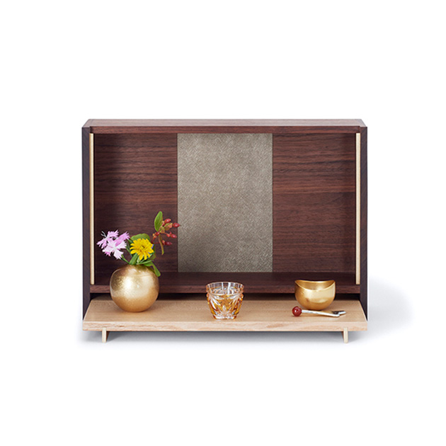
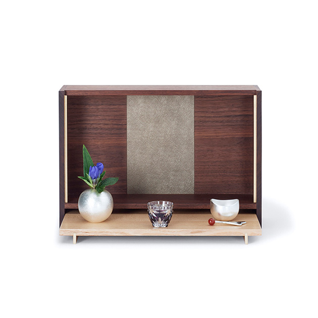
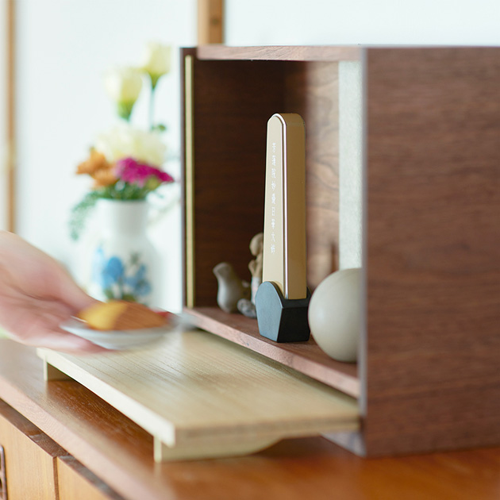
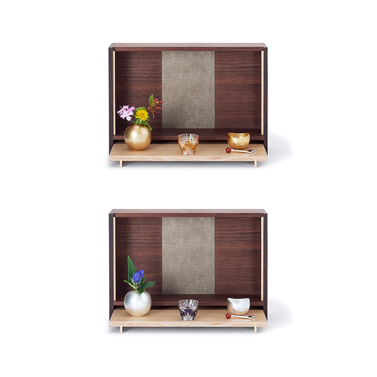
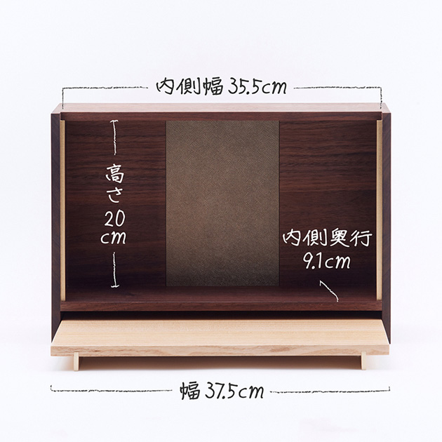

Do
間、個人化への導線
暮らしに間を置く道具を知り、買える場所へ行く。
Home › Do › 祈りの道具屋 まなか › GAKU 想セット


color: ゴールドトーン / シルバートーン
-
ゴールドトーン
¥255,750 税込
-
シルバートーン
¥255,750 税込
商品説明
『GAKU』に個性のある仏具をあわせて
純粋な引き立て役として、主役を輝かせ、あなたらしい偲び方と共に歩むために作られた『GAKU』と、個性のある3つの仏具のコーディネートセットをご用意しました。大切なあの人との新しい関係がはじまるにふさわしい祈りの空間になりますように、と、想いを込めました。
＊本セットの商品内容
(1)GAKU ×1
(2)月の花立 ×1
(3)羽の琳 ×1
(4)江戸切子ぐいのみ×1

主役が心地いいお仏壇『GAKU』
『GAKU』シリーズのお仏壇は、純粋な引き立て役。主役を輝かせ、あなたらしい偲び方と共に歩むために存在します。お仏壇にお祀りするあなたとあの人を繋ぐモノ。その大切なモノが、一番心地よく過ごせる場所を作りたいと考えました。あなたとあの人のストーリーがかけがえのない一枚の絵となり、美しく浮かび上がってくるのではないでしょうか。

いつもそばにある
お月さまのように
『月の花立』
お星さまになったあの人にそっと寄り添うお月さまのように、まあるく輝くその姿を、お位牌にそっと寄り添う花立にしました。大切なあの人とあなたの新しい関係がはじまる場所を、いつもそばにいるお月さまのように照らしてくれることでしょう。毎日使うものとして、使いやすさも考慮されています。

2羽の水鳥がさえずる
ハーモニー『羽の琳』
お星さまになったあの人に寄り添うつがいの水鳥。その2羽でさえずるハーモニーをおりんにしました。美しい音色で大切なあの人に語りかければ、毎日の祈りの時間がより豊かになっていくことでしょう。

『GAKU』にあわせて
2つのカラー
『GAKU』に、ゴールドの仏具を合わせたほんの少し華やかなセットと、シルバーの仏具を合わせたシックで涼やかなセットの2種類をご用意しています。あなたらしい祈りの空間に合うカラーをお選びください。

商品仕様
サイズ
(1)GAKU
幅37.5cm×奥行10cm×高さ25.7cm
重さ:2kg
(2)月の花立
直径6.4cm×高さ6.1cm×深さ5.5cm
口の直径：1.4cm
(3)羽の琳
直径5.3cm×高さ3.8cm (本体)
(4)ぐいのみ
直径5cm×高さ4cm
仕上げ
(1)GAKU
木部分:オイル仕上げ（ブラックウォールナット）、ウレタン塗装（国産桐）
真鍮部分:バイブレーション加工クリア仕上げ
革部分:型押し革イブシ金
素材
(1)GAKU:ブラックウォールナット、国産桐、真鍮、革
(2)月の花立:真鍮
(3)羽の琳:シルジン青銅、錫・瑪瑙（りん棒）
(4)ぐいのみ:ガラス
生産地
(1)(1)GAKU:岐阜県高山市
(2)月の花立、(3)羽の琳:富山県高岡市
(4)ぐいのみ:東京都江戸川区
カラー
ゴールドトーンセット
シルバートーンセット